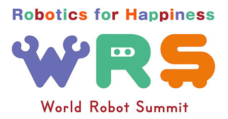

Joanne Truong
truong dot j at gatech dot edu
Georgia Institute of Technology
Ph.D., Robotics 2024 (Expected)
Northeastern University
B.S., Computer Engineering
Magna Cum Laude 2019
About Me
I am a 3rd year Robotics Ph.D. student at the Georgia Institute of Technology, advised by Dhruv Batra and Sonia Chernova, and work closely with Devi Parikh. I am interested in working at the intersection of machine learning and robotics. My long-term research goal is to develop robots that are scalable, robust and capable of working in complex, real world environments.
I am currently an intern at NVIDIA, working with Clemens Eppner, Ankur Handa, and Dieter Fox on object rearrangement. In the summer of 2020, I was an intern at Facebook AI Research, working with Akshara Rai on learning dynamics aware navigation policies for multiple robot embodiments.
As an undergrad, I worked in the Robotics and Intelligent Vehicles Research (RIVeR) lab at Northeastern University with Taskin Padir. During my time there, I competed at the 2019 RoboCup@Home competition in Sydney, Australia and the 2018 World Robot Summit in Tokyo, Japan.
I also have the pleasure of mentoring three students, Max Rudolph (2nd year MS@GT), Simar Kareer (1st year MS@GT), and Marco Delgado (3rd year BS@GT) in research projects.
News
- [Spring 2021] Organized the EmbodiedAI Workshop at CVPR2021.
- [Spring 2021] Awarded the Apple Scholars in AI/ML PhD Fellowship. (Department’s news)
- [Spring 2021] Awarded the Adobe Research Fellowship. (Department’s news)
- [Spring 2020] Awarded the NSF Graduate Research Fellowship (Department’s news).
- [Spring 2020] Awarded the NDSEG Fellowship (declined; Department’s news).
- [Spring 2020] Awarded the Google Women Techmakers Scholarship.
Summer 2020
Summer 2021
Research
Intelligent Robots and Systems (IROS), 2021
[Paper]

International Conference on Robotics and Automation (ICRA), and
Robotics and Automation Letters (RA-L), 2021
[Paper]

Conference on Robot Learning (CoRL) and
Embodied Vision, Actions & Language Workshop at ECCV, 2020
[Paper]

Intelligent Robots and Systems (IROS),
Robotics and Automation Letters (RA-L), and
RSS 2nd Workshop on Closing the Reality Gap in Sim2Real Transfer for Robotics, 2020
[Paper] [Website]

PErvasive Technologies Related to Assistive Environments (PETRA) 2019
[Paper]

